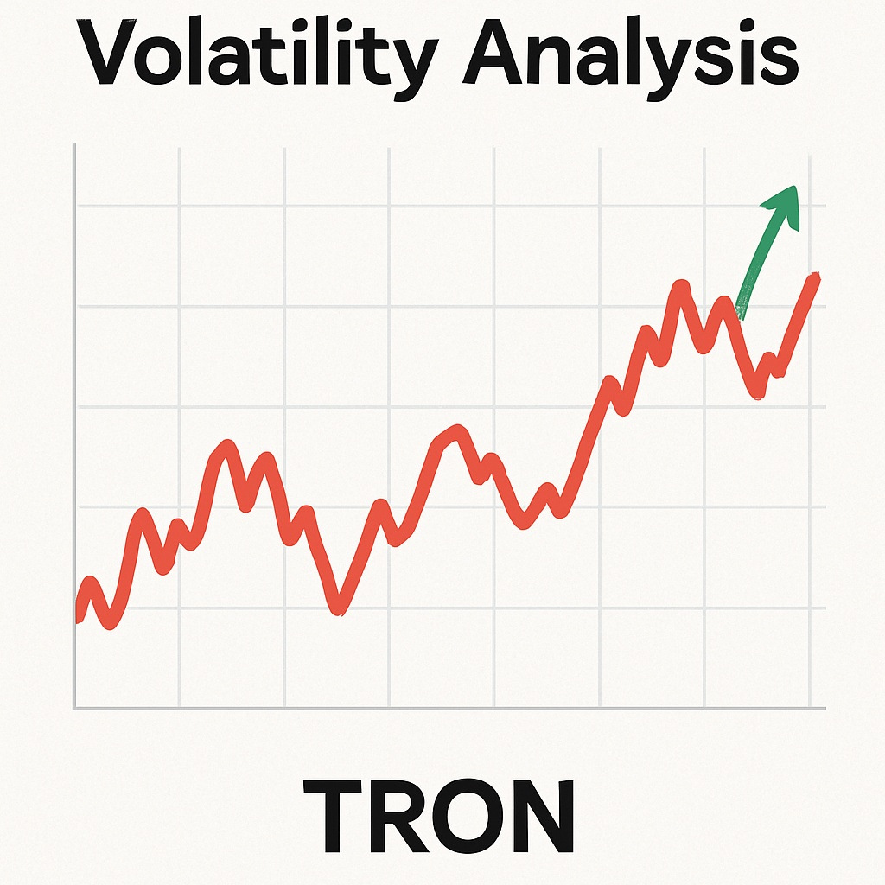

TRON Price Prediction for End of 2025: In-Depth Analysis and Insights
The information in this article is provided for educational purposes only and is not investment advice. Cryptocurrency investments carry risks.
Introduction
As of August 23, 2025, 12:36 AM EEST, TRON (TRX) is trading at approximately $0.14, establishing itself as a leading blockchain platform focused on decentralized content sharing and entertainment. Founded by Justin Sun, TRON supports smart contracts, DeFi applications, and stablecoins like USDT, which has a significant portion of its supply on the TRON network. Its high throughput and low fees make it popular for dApps and transactions. This article provides a comprehensive analysis of TRX’s price outlook for the end of 2025, exploring bullish and bearish scenarios, key growth drivers, and potential risks based on current market trends and ecosystem developments.

Current Situation
As of August 23, 2025, TRON’s price stands at around $0.14, reflecting a 18% increase from June 2025, when TRX traded at $0.118. Over the past 30 days, TRON has shown strength, with 54% of days closing in the green and a moderate volatility of 4.5%. The Fear and Greed Index at 67 indicates strong investor confidence, driven by high USDT transaction volume on TRON, growing DeFi activity, and partnerships. Over the past year, TRX’s price has risen from $0.085, achieving a 65% gain. Since 2018, when TRX was valued at $0.025, it has grown by 460%, fueled by its scalable network and content-focused ecosystem.
Price Predictions for End of 2025
Analyst forecasts for TRON by December 2025 vary based on market conditions. Bearish scenarios suggest a potential decline to $0.10 if a projected 30–40% market correction occurs in early 2025. Moderate projections estimate TRX stabilizing between $0.15 and $0.20, supported by steady USDT dominance and DeFi growth. Bullish forecasts predict TRX could reach $0.25–$0.30, particularly if a market rally occurs between February and April 2025. Some analysts project TRON hitting $0.22 by October 2025 if ecosystem adoption continues to accelerate.
Factors Driving Price Growth
- USDT Integration: TRON hosts a large portion of USDT supply, driving transaction volume and network usage.
- DeFi and dApps: Growing DeFi protocols and dApps on TRON enhance TRX utility and demand.
- High Throughput: TRON’s Delegated Proof-of-Stake (DPoS) enables fast, low-cost transactions, attracting users.
- Market Rally: A projected cryptocurrency market surge in 2025, particularly from February to April, could create a favorable environment for TRX’s price growth.
- Partnerships: Collaborations with entertainment and content platforms bolster TRON’s real-world adoption.
Risks and Downward Factors
- Market Volatility: A projected 30–40% market correction in early 2025 could exert downward pressure on TRX’s price.
- Regulatory Risks: Stricter global regulations on stablecoins and DeFi could impact TRON’s ecosystem.
- Competition: Intense competition from other blockchains like Ethereum and Solana could challenge TRON’s market share.
Volatility Analysis
From July to August 2025, TRON’s price rose from $0.118 to $0.14, marking an 18% gain with a volatility of 4.5%, indicating relative stability. Annual growth of 65% underscores TRX’s strong performance. Technical indicators, including bullish trends in the 50-day and 200-day Exponential Moving Averages (EMAs), suggest continued upward potential. A projected market recovery from February to April 2025 could further support price growth, particularly as TRON expands its DeFi and stablecoin ecosystem. Its high throughput and low fees position it well for sustained adoption and value appreciation.
Conclusion
By the end of 2025, TRON’s price is projected to range between $0.15 and $0.25, with the potential to reach $0.30 in a bullish market driven by USDT integration, DeFi growth, and partnerships. However, investors should remain cautious of market volatility, regulatory uncertainties, and competition. Thorough research and risk management are essential before investing in TRON.